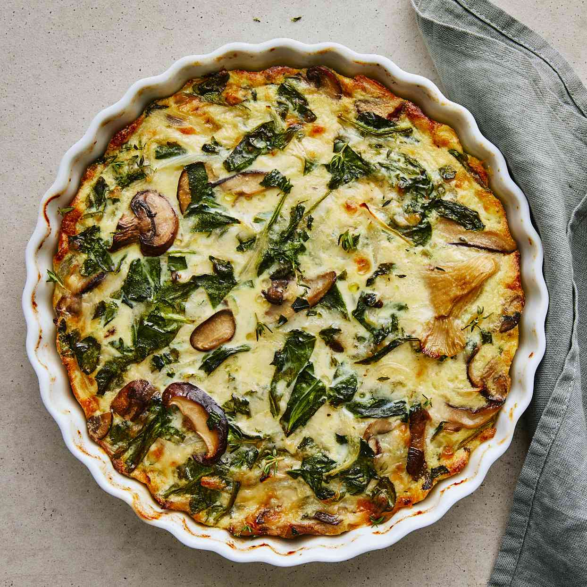

Spinach & Mushroom Quiche

Description
Flaky pie crust, umami-packed mushrooms, cream, and cheese combine to make this
quiche a firm favourite at the buffet table. Whether freshly-baked and warm, or
cold, straight from the fridge, this classic pie works a treat.
Ingredients
- 3-2-1 pie dough (see recipe)
- 1 small onion, finely diced
- 300g button mushrooms, sliced
- 200g spinach, roughly chopped
- 1 large knob butter
- 4 eggs
- 200ml cream
- 50g grated parmesan
Steps
- Pre-heat oven to 180c
- Place a frying pan on medium heat and add the butter
- Add the onions and saute until translucent
- Add the mushrooms and cook until they get some colour
- Add the spinach and saute until most of the liquid has evaporated,
then season to taste with salt and pepper and put aside to cool
- Roll out the pie dough and place it into a pie pan cutting of the
escess around the edges
- Whisk the eggs and cream together in a bowl and combine with the
spinach and mushroom mix
- Pour the mixture into the pie base, top with the parmesan and bake
in the oven until just set and getting some colour (approx. 35 minutes)
TIP: For best results, blind bake the pie crust